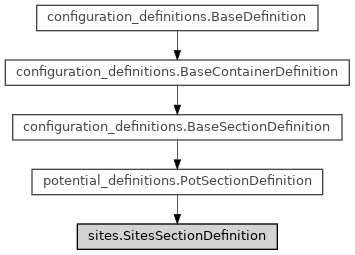

SitesSectionDefinition¶
- class ase2sprkkr.potentials.definitions.sections.sites.SitesSectionDefinition(name='SITES', **kwargs)[source]¶
Class hierarchy
Constructor
- __init__(name='SITES', **kwargs)[source]¶
For the documentation of the other parameters, see
ase2sprkkr.common.BaseSectionDefinition()- Parameters
mandatory – Is the section mandatory? I.e. the potential file is required to contain this sections.
Inherited attributes
_init_argscustom_name_charactersWhich characters can appears in an unknown child (value/section) name
custom_value_nameJust the name that appears in the grammar, when it is printed.
delimiteroptions are delimited by newline in ouptut.
do_not_skip_whitespaces_before_nameforce_orderThe order of items in potential file is fixed
name_in_grammarIs the name of the value/section present in the file?
validateA function for validation of just the parsed result (not the user input)
value_name_formatThe (print) format, how the name is written
valuesThe name of the option/section
Alternative names of the option/section.
Is it required part of configuration (or can it be ommited)?
A short help text describing the content for the users.
A longer help text describing the content for the users.
Methods
__init__([name])For the documentation of the other parameters, see
ase2sprkkr.common.BaseSectionDefinition()Inherited methods
__contains__(key)__getitem__(key)__iter__()__setitem__(key, value)_dict_from_named_values(args[, items])auxiliary method that creates dictionary from the arguments
_first_section_is_fixed()Has/ve the first child(s) in an unordered sequence fixed position?
_grammar()_tuple_with_my_name(expr[, delimiter, has_value])Create the grammar returning tuple (self.name, <result of the expr>)
_values_grammar([delimiter])all_member_names()copy([args, items, remove, defaults])Copy the section with the contained values modified by the arguments.
create_object([container])Creates Section/Option/.
custom_class(name, section)custom_member_grammar([value_names])Grammar for the custom - unknown - child
delimited_custom_value_grammar()Return the grammar for the custom child with delimiter.
depends_on()The order of processing of sections during reading can be different than the order during a write.
grammar()Generate grammar with the correct settings of pyparsing
grammar_of_delimiter()members()names()parse(str[, whole_string, return_value_only])Parse the string, return the parsed data as dictionary
parse_file(file[, return_value_only])Parse the file, return the parsed data as dictionary
parse_from_stream(stream, up_to[, start, ...])Parse string readed from asyncio stream.
parse_return(val[, return_value_only])Clean up the parsed values (unpack then from unnecessary containers)
remove(name)- result_class¶
alias of
ase2sprkkr.potentials.definitions.sections.sites.SitesSection